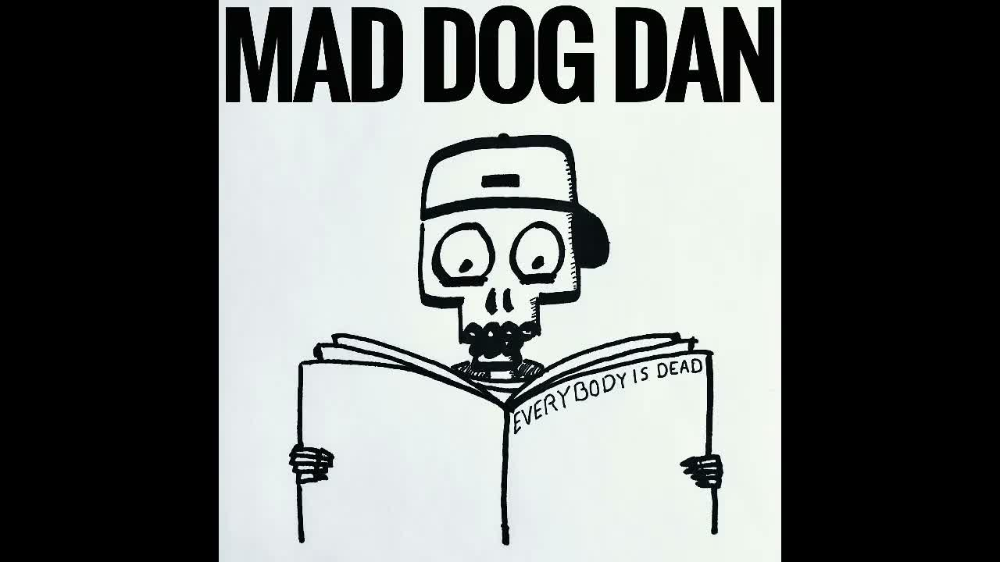

Review
MAD DOG DAN - Tanze Samba mit mir

Seit dem ersten Jahr von RandaleFUNK wollte ich eigentlich mal irgendetwas mit oder über Mad Dog Dan machen.
Irgendetwas kam immer dazwischen.
Jetzt veröffentlichen diese Knalltüten ausgerechnet "Tanze Samba mit mir" auf YouTube und zwingen mich praktisch dazu, endlich einen Artikel zu schreiben.
Danke auch.
Wer beim Titel an Tony Holiday denkt, liegt richtig. Wer danach eine saubere und geschmackvolle Neuinterpretation erwartet, hat Mad Dog Dan vermutlich noch nicht kennengelernt.
Die Aufnahme ist schräg.
Sie ist schief gesungen.
Und genau deshalb macht sie Laune.
Zumindest dann, wenn man auf solche Musik steht.
Ich tue es.
Mad Dog Dan erinnert mich ein bisschen an einen Verkehrsunfall. Man weiß, dass man eigentlich nicht hinsehen sollte. Oder in diesem Fall: nicht hinhören.
Und trotzdem bleibt man hängen.
Nicht, weil alles perfekt ist.
Sondern weil man wissen möchte, was als Nächstes passiert.
Als wäre das noch nicht genug, schickt mir die Kackbratze auch noch ganz beiläufig einen Song vom neuen Livealbum Penner und Piraten Party Live:
"Hier kommt wie versprochen ein Song von unserem neuen Livealbum. Der Song heißt 'Die drei Plagezeichen'."
Keine große Ankündigung.
Einfach Song rübergeschoben.
Passt.
Und falls euch der Name bekannt vorkommt: Auf Punk Chartbusters Vol. 7 ist Mad Dog Dan ebenfalls vertreten und verpasst "Wake Me Up" von Avicii seine ganz eigene Behandlung. Über den kompletten Sampler habe ich bereits einen eigenen Artikel geschrieben.
"Tanze Samba mit mir" ist nichts für Menschen, die perfekten Gesang oder musikalische Hochglanzproduktionen suchen.
Für alle anderen könnte das genau die richtige Portion Wahnsinn sein.
Ich jedenfalls hoffe, dass ich mit Mad Dog Dan nicht wieder vier Jahre warte, bis hier der nächste Artikel erscheint.
Dafür sorgt der verrückte Hund wahrscheinlich schon ganz von allein.
Mad Dog Dan - Tanze Samba mit mir auf YouTube
Mad Dog Dan auf Instagram
RandaleFUNK zu Punk Chartbusters Vol. 7